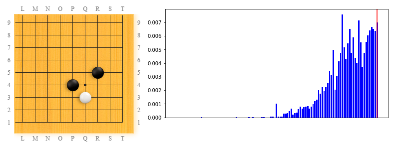

(This is a follow up from the overview of LeelaZero's training patterns page).
This article is about the corner patterns that occur in LeelaZero's training games in a recent strong version 1ccb7342 (promoted on March 19, 2018). This is stronger than the version that defeated Hajin Lee 4p on even terms in their first public game, it is quite likely playing at mid-strong pro level.
Another reason for looking at patterns in one of the most recent versions is because it gives us a glimpse into the future of LeelaZero, when comparing patterns from this version with global patterns across all versions.
In the graphs below one may notice a red line on the right of the popularity trends: that is in order to point at what version are we talking about in the pattern frequency timeline; in this case we are talking about the most recent version included in this analysis, which is always the right-most one in the graphs below.
This may come as a surprise if someone has stopped looking at LeelaZero games recently, but the 3x3 invasion against 4x4 pattern was dethroned, and instead it is the most common approach move against a 3x4 stone that makes for the top pattern in recent versions.
Why is that? Most likely it is because LeelaZero has evolved beyond just playing all 4x4, towards experimenting with 3x4 opening moves more and more. I guess it will do this for a while, and then maybe follow into the footsteps of AlphaGoZero and converge back to 4x4?
The 2nd most popular pattern in this version is tightly related to the one above, and is the most common response of LeelaZero to keima approach. The reply is a keima again, and is something we see AlphaGoZero play a lot too. So LeelaZero seems to be headed in the right direction.
Interestingly, the popularity trends of this and the one above are different: while playing the low keima approach against 3x4 started to become popular around the midpoint of the training history, this calm keima reply to the approach only became popular in the most recent quarter of the timeline, which means that the initial replies to the keima approach were different moves.
Peeking down the list of top patterns, we can find in position 16 the most common reply to this move too, which is another calm move (two-space jump).
And two more places down, at position 18, we find the most common follow-up if the side approaching 3x4 does not reply: two-space hasami.
It is at position 41 that we find the answer to the question about "what else did LeelaZero try against the approach move?": kosumi-tsuke is one such move.
Around position 80 we find another answer tried by LeelaZero: low, two-space squeeze:
It is far down, around position 165, where we find Shusaku kosumi reply timeline, which enjoyed a temporary peak:
Interestingly, just next slot is taken by a related move: two-point jump in reply to keima kakari. This was tried (and peaked) a little after the Shusaku move, according to the timeline.
In third place for this version is the pattern that is in top-1 place globally: the 3x3 invasion against a 4x4 stone.
Jumping over a few patterns that are just follow-ups from the 3x3 invasion, we find another pattern that AlphaGo has popularized. This is also consistent with my observation above: LeelaZero started loving 3x4 openings.
This pattern shows the most common follow-up LeelaZero when an approach move against 3x4 is ignored.

This pattern shows the better way to deal with a 3x3 invasion, instead of simply playing hane, at least according to AlphaGo's evaluations.
By comparison, the simpler way to deal with 3x3, hane, is #7 in the top patterns for this version:
Comparing the timelines for these two patterns tells the following story: the simpler and more natural move, hane, was discovered much earlier in the training process (around the 1/3 of the trimeline), became more and more popular, peaked around 2/3 of the timeline, and then faded down, at the expense of this keima reply which was discovered later and became popular only recently (around the 3/4 point on the timeline).
If LeelaZero is to agree with AlphaGo, the popularity of the keima follow-up will keep growing, and the older hane follow-up will become extinct.
The pattern at position #31 results after a move that is an AlphaGo invention: the 4x4 attachment against a nikken-shimari (after black ignored white's approach move once). It is very interesting how AIs agree on moves that humans have either misjudged in the past (such as ealy 3x3 invasions against 4x4) or simply didn't even think about (such as this particular pattern).
I found this very human-old-style move (white descending at P2 instead of the more common retreat at Q3) way down in the patterns for this version (around rank 200 or so). According to my game collection, this was played first in an official game by Kitani Minoru against Takagawa Kaku, in 1950.
For comparison, here's the timeline for the more common reply (around top ~30 in this version) - keep in mind that the absolute numbers in this graph are about 10 times larger than the ones in the graph above it. The trend in both cases show that both moves became relatively more popular in recent versions, but the Kitani move is still 10 times less likely to be chosen by LeelaZero, compared to the more common move.